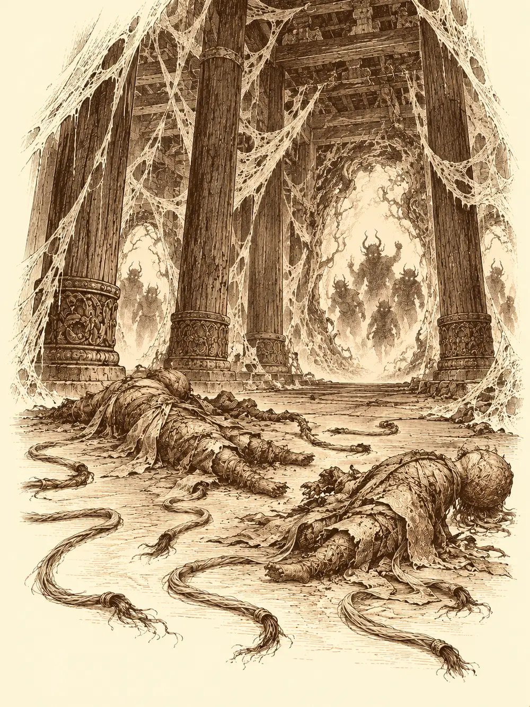

Capítulo 130
Los seis hilos
Libro VIII · El hilo maldito
Al otro lado del portal, el aire olía a polvo viejo y a algo dulzón, como fruta que se pudre dentro de una caja. Calista se detuvo nada más poner los pies en la roca y miró a todas partes. Luego miró a Gelbreak.
"¿Era hoy cuando íbamos a...?".
No lo recordaba. No podía recordarlo. Para que la matrona no pudiera leer en su cabeza lo que planeaban, se había hecho borrar los planes de la memoria, y ahora estaba allí, en el dominio de Lolth, sin saber cómo había llegado. Los demás sí lo sabían. Gelbreak y ella habían conseguido una reliquia en una ciudad drow; la energía de la espada demoníaca de los cazadores, idea de Banzo, había hecho el resto. Palayer y Kazuki se habían sumado por el camino.
"Lo mantuve en secreto para que mi madre no lo supiera", dijo Gelbreak.
Calista lo miró con la cara de quien acaba de descubrir que la han pillado con la guardia baja. Banzo le sonrió y negó con la cabeza: confía. Ella respiró hondo y habló para los que aún no lo sabían todo.
"Estamos malditos. Una matrona nos tiene en sus garras, y hay unos hilos que sostienen nuestras mentes aquí dentro. Tenemos que cortarlos y salir, sanos y salvos si puede ser. Solo hay una espada capaz de hacerlo, y solo él puede empuñarla". Señaló a Gelbreak, que llevaba al cinto la espada de Eilistraee. "Este sitio es probablemente el más peligroso en el que hemos estado nunca. Sed precavidos".
El paisaje era un archipiélago de rocas flotando sobre la nada, unidas por puentes de telaraña gruesos como maromas. En cada rincón había arañas observándolos. Avanzaban en fila, Banzo y Palayer delante, Kazuki y Calista detrás, cuando dos criaturas enormes les cerraron el paso. Banzo arrinconó a una contra el borde y Calista terminó de empujarla con una ráfaga de viento; Palayer empujó a la otra con el escudo y Kazuki la remató hasta que cayó. Las dos se perdieron gritando en el vacío.
Más adelante, un rayo partió el aire y llegó la primera emboscada de verdad: tiradores apostados en las alturas, magos y una sacerdotisa drow. Gelbreak tendió un globo de oscuridad y Kazuki aceleró al drow con un gesto. Banzo lo agarró y lo lanzó por los aires como un proyectil hasta donde estaban los magos. Calista cantaba, curaba e inspiraba y, cuando pudo, empujó con el viento a un tirador hacia la oscuridad; pero la nube de insectos que les habían echado encima no se disipaba con el viento. Les llovieron telarañas mágicas. El drow tuvo que romper la concentración de un mago para soltar a sus compañeros. Banzo se puso delante de todo lo que hacía daño y mató a la sacerdotisa. Palayer sostenía la línea. Kazuki golpeaba desde atrás.
Cuando acabaron con ellos, Calista vio a lo lejos un templo envuelto en redes y lo reconoció. Lo había visto en los sueños que le mandaba la matrona.
Entre ellos y el templo había siete monstruos más. Discutieron distracciones, fuego, mil ideas. Al final Calista y Gelbreak los paralizaron a la vez y todos echaron a correr. La carrera era demasiado larga. Los monstruos se liberaron antes de que llegaran, y el virote de fuego de Kazuki rebotó en unas telarañas que no ardían, porque eran de Lolth. Entraron en el templo con los perseguidores pegados a la espalda. Banzo atrancó las puertas con una jabalina mientras fuera golpeaban. El portal por el que habían llegado ya se había cerrado. No había vuelta atrás.
Dentro, entre columnas talladas como mujeres drow que sostenían el techo y paredes por las que entraban más telarañas, colgaban dos figuras hechas de hebras de seda. Una tenía la forma de Calista, otra la de Banzo. Cada una pendía de tres hilos. Y al fondo, en un trono sobre un montículo, alguien se reía.
Calista reconoció esa risa y se le puso cara de terror. Gelbreak sacó la espada y apuntó con ella hacia delante.
"Adelante", dijo la matrona. "¿Por qué no os acercáis?".
Movió las manos y los muñecos se movieron con ellas, y Calista y Banzo dieron un paso adelante sin quererlo. Gelbreak miraba a su madre con la mandíbula apretada.
"¿Creíais que no sabría que vendríais? Ya te lo dije una vez", le dijo a Calista. "En este juego, la única forma de ganar es dejarnos tranquilos".
Chasqueó los dedos. Se abrieron portales a su alrededor y de ellos salieron criaturas mitad drow y mitad araña, y arañas, muchas arañas.
Calista se lanzó hacia su efigie y quiso arrancarla de sus hilos con el viento. No se podía; solo la espada podía cortarlos. Levantó entonces una niebla espesa para que nadie pudiera ver bien. Gelbreak avanzó hacia los hilos con la espada en alto, y fue entonces cuando el lugar empezó a hablarle. Le llenó la cabeza de arañas. Le hizo temblar la hoja en las manos. La voz de su madre le hablaba de volver a casa, y las telarañas se le enredaban en los pies.
Cuando la niebla se levantó, vieron que los golpes atravesaban a la matrona como si no estuviera allí. Era una presencia, una proyección sentada en el trono, y nada de lo que le lanzaban le hacía daño.
Calista llegó junto al drow, puso las manos sobre las suyas en la empuñadura y le recordó lo que harían cuando todo aquello terminara.
"Juntos".
La hoja dejó de temblar. Tres hilos cedieron y una de las figuras se desplomó y se deshizo en seda. La matrona se volvió contra su hijo. Unos espíritus surgieron alrededor de Banzo, sus ancestros, y amortiguaron parte del castigo; pero cuando él respondió, el golpe atravesó a la madre sin tocarla.
Llegaron más criaturas por los portales. Un demonio con pinzas aturdió a Calista y la dejó un instante sin poder ayudar. La matrona paralizó a Kazuki con una orden, y él siguió disparando hielo y flechas mientras pudo. Banzo atraía sobre sí todo lo que mordía, y Calista y Palayer gastaban en él lo que les quedaba de curación; la paladina le pasó por las manos un gran caudal de vida y luego mató a dos de las criaturas. Calista detuvo a tiempo un intento de dominar la mente de Banzo y encerró a uno de los monstruos en una prisión de visiones, un mar lleno de tiburones del que no podía salir. La matrona restauraba a sus criaturas y respondía a cada corte con rayos que lo destrozaban todo. Gelbreak, a ratos sostenido por Calista y a ratos solo, siguió cortando.
Cayeron los seis hilos.
Las dos figuras de seda estaban en el suelo, y los portales seguían escupiendo perseguidores. En medio del templo apareció de pronto una luz. La matrona gritó al verla.
"¡Malditos malnacidos!".
Era la salida. Calista tomó a Gelbreak de la mano y tiró de él, pero las redes volvieron a atraparlo y el influjo del lugar le hizo abrir los dedos: la espada cayó al suelo. Un demonio tenía a Banzo atrapado en sus pinzas. Kazuki seguía sin poder moverse. La luz parpadeaba.
"¿Queréis iros ya, pedazo de inútiles?", les gritó el drow.
Banzo se arrancó de las pinzas a la fuerza y corrió hacia ellos recibiendo golpes por el camino. Palayer no tenía fuerza para cargar con Kazuki, así que dejó en el suelo su escudo, su inmaculado escudo, subió encima al noble paralizado y lo arrastró como un trineo hasta la luz. Calista se agachó, recogió del suelo la espada de Eilistraee, y todos cruzaron.
Aparecieron junto a un lago que algunos ya conocían, el lago de Eilistraee, con la noche quieta y el agua lisa como un espejo. Estaban destrozados. Calista gastó lo poco que le quedaba de magia en curar a los demás; a Gelbreak no pudo, porque él le negó con la cabeza y le cogió las manos para mirárselas.

No había marcas.
La abrazó con todas las fuerzas que tenía, que no eran muchas, jadeando todavía. Banzo se arrancó los guantes y se miró las suyas. Limpias. Se dejó caer de espaldas sobre la hierba y se echó a reír. Palayer los abrazó a los dos y le ofreció a Kazuki otro abrazo. El noble, de rodillas en la orilla, con el libro caído a un lado y el estoque al otro, murmuró unas palabras de agradecimiento en una lengua que los demás no entendieron, mirando el agua.
La diosa salió del lago. Sonreía al verlos alegres.
"Habéis hecho una gran proeza. Habéis eliminado la maldición de vosotros dos". Miró entonces a Gelbreak. "Y ahora tendré mi pago, ¿verdad, campeón?".
Calista se puso delante de él.
"Luchará cuando yo se lo mande contra Lolth", dijo la diosa.
"No lo hará. Él debe ser libre".
"¿Osas desafiarme?".
Calista tragó saliva. Le temblaban las piernas y dio un paso atrás sin querer, pero no se apartó. Kazuki se acercó a la orilla y se postró: había oído historias de dioses que elegían a otros campeones. La diosa le contestó que podía, pero que no quería. Palayer intervino con cuidado: haber luchado en su nombre y haber mostrado su gloria ya era una primera prueba, y obligarlo no parecía lo mejor. Eilistraee los miró a todos, y la presión de esa mirada les hizo bajar la vista.
Gelbreak pasó junto a Calista, tomó la espada y la tiró al lago. Se hundió despacio, con una luz que fue apagándose bajo el agua.
"No voy a ser tu campeón. Ni me obligarás".
Banzo se levantó como pudo, se colocó a su lado y le puso una mano en el hombro. La diosa los observó con una mueca de desagrado.
"Algún día deberás pagar por esto".
Y se marchó.
Se quedaron los cinco allí, heridos, libres. Palayer estaba contenta de haber honrado a su diosa, aunque le pesara que quisieran obligar a nadie. Kazuki sentía que había protegido a sus compañeros. Banzo se sentía liberado, y en deuda, y con prisa por volver a palacio a contárselo a Rua. Calista sentía que le habían quitado una losa de encima y le habían echado otra: ahora había otra diosa en su contra. Tenía miedo. Se volvió hacia los demás con una sonrisa para que nadie lo notara, y casi nadie lo notó. Gelbreak sí.
La guerra no había esperado por ellos. Al segundo día de la primera oleada, las defensas del sur estaban agotadas. Guxi recorría las trincheras dando ánimos, y Archi las reforzaba con ayuda de los animales de Arwen. En medio del caos, Danifae mató a dos soldados y atacó por sorpresa a Gelbreak; el drow resistió, y ella se retiró dejándolo ante varios tengu de los grandes. Kurobane acudió a ayudarlo, y Banzo y Arwen, convertida en águila, los sacaron de allí por el aire. Los demonios los persiguieron hasta que Shizuka, a quien Banzo había ido a buscar a la base, los carbonizó con un rayo de sol.
Banzo organizó entonces una carga por el flanco con cinco elefantes invocados y la propia Arwen convertida en el sexto, y Gelbreak, Kurobane y Serafina cargaron con ellos. Las filas enemigas se abrieron y la artillería de Archi pudo avanzar. Más tarde, el goliat y el ninja intentaron salvar una posición atacada por un demonio enorme que paró la embestida de Banzo en seco y desplegó otros dos brazos. Kurobane recibió tres zarpazos, uno junto al ojo. Banzo sujetó a la criatura y aguantó sus golpes hasta que el ninja le cortó el cuello. Después se desplomó, sangrando mucho, y los soldados lo arrastraron a la trinchera.
Al amanecer, los demonios dejaron de salir. Kuroto había resistido la primera oleada.
Banzo recorrió el campamento recogiendo heridos, identificando cadáveres, entregando a los oficiales las pertenencias de los muertos. Luego fue a buscar a Guxi. Le contó que su puesto de curas había salvado treinta y una vidas y había devuelto al combate a doscientos quince heridos. Guxi creyó al principio que eran las cifras de muertos, y cuando entendió, se abrazaron. Le dijo que, después de la guerra, quería enseñar a los jóvenes, y que soñaba con un futuro feliz para todos, él también, con Serafina. Volvió a pedirle a Banzo que los liderara. El goliat no quiso el título; quería sangrar como uno más de su familia. Pero preguntó si lo seguirían hasta el final, y Guxi le dijo que sí. Ese día apareció en el cuello de Banzo un tatuaje nuevo: una tuerca, un libro y una pluma. Antes de separarse, Guxi le entregó su piedra de mensajes. Ya no era un cazador, le explicó, y Calista tenía la otra.
Danifae volvió con una espada que debía devolver y a pedir sus propias armas. Banzo le propuso pelear encadenada a él, para respetar la sentencia de Aka, y le pidió una demostración ante veinte cadetes. Los derribaron a todos, y entonces la drow usó la cadena, los movimientos y las armas de los reclutas para tejer una red en la que acabó atrapado Banzo. Se soltó con un paso de niebla, deshizo la trampa y le advirtió de que el enemigo podía ser el compañero más cercano. Juró usar aquellas espadas para defender Kuroto de Otakemaru. Firmar un contrato con los cazadores, no; eso era otra cosa. Recibió sus armas y se marchó.
Arwen se acercó en silencio a los cuerpos de los animales que habían muerto en la defensa y, uno por uno, cuidó de sus almas para que encontraran paz y volvieran a nacer.
Serafina siguió durante horas el olor de Kurobane hasta su casa destruida. Lo encontró rodeado de libros y papeles, intentando hablar con algo más alto que él. Le dijo que las ayudas siempre acababan haciéndole más daño, que el amor podía acabar con el deber, y se arrancó el emblema de los cazadores. Ella se enfadó, lloró, se dio la vuelta para irse, y él la abrazó y reconoció que la soledad podía herir más que una espada. Le contó algo: según sabía, Osuray había pactado con una informante de los barrios bajos para que destruyera la información sobre su liberación. Días después aceptó que Banzo lo acompañara a visitar los templos de los guardianes, aunque decidió que todavía no era el momento de ir.
Banzo hizo una última cosa antes de volver al frente. Mei, una joven sirvienta de la shogun, lo maquilló, le ajustó unas telas de Tsugami en forma de kimono, le puso un abanico en la mano y le enseñó a caminar a pasitos cortos, y así entró en palacio por los pasillos del servicio, enorme, con la cara escondida tras un montón de sábanas. Rua lo reconoció enseguida por la voz que fingía, se echó a reír y lo abrazó. Le quitó la peluca. Le dijo que había leído sus cartas, que estaban allí, abiertas en la mesilla, y él le leyó un capítulo de un libro, atascándose todavía en algunas palabras, pero mejor que antes. Luego ella le pidió que no se marchara otra vez. Sentía a los nobles en su contra. Y había algo más, le dijo entre lágrimas: los susurros. Los oía en la oscuridad.
Banzo la sostuvo contra el pecho y le preguntó qué le pasaba. Rua no supo decírselo.